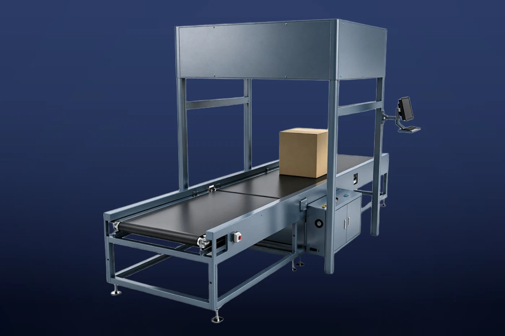

产品特点
一体式数据采集
结合读码相机、立体相机与动态称重设备。
规格与选型条件
| 处理能力 | 4,000 件/小时 |
|---|---|
| 尺寸测量精度 | ±5〜10 mm |
| 重量测量精度 | ±0.05 kg |
数值依据自有工厂2026年10月版产品资料。实际能力会因货物尺寸与重量、供包条件、格口数量及产线配置而变化。
导入前需确认的事项
请告知货物最小及最大尺寸与重量、所需处理量、格口数量、安装空间、电源、温度范围及既有设备接驳条件；维护范围和安装工序也将逐项确认。
咨询规格与报价
结合读码相机、立体相机与动态称重设备。
| 处理能力 | 4,000 件/小时 |
|---|---|
| 尺寸测量精度 | ±5〜10 mm |
| 重量测量精度 | ±0.05 kg |
数值依据自有工厂2026年10月版产品资料。实际能力会因货物尺寸与重量、供包条件、格口数量及产线配置而变化。
请告知货物最小及最大尺寸与重量、所需处理量、格口数量、安装空间、电源、温度范围及既有设备接驳条件；维护范围和安装工序也将逐项确认。
咨询规格与报价